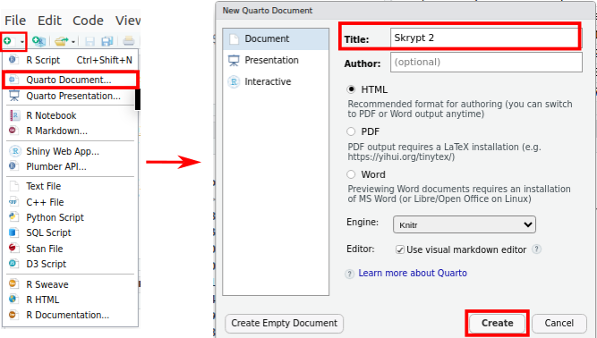
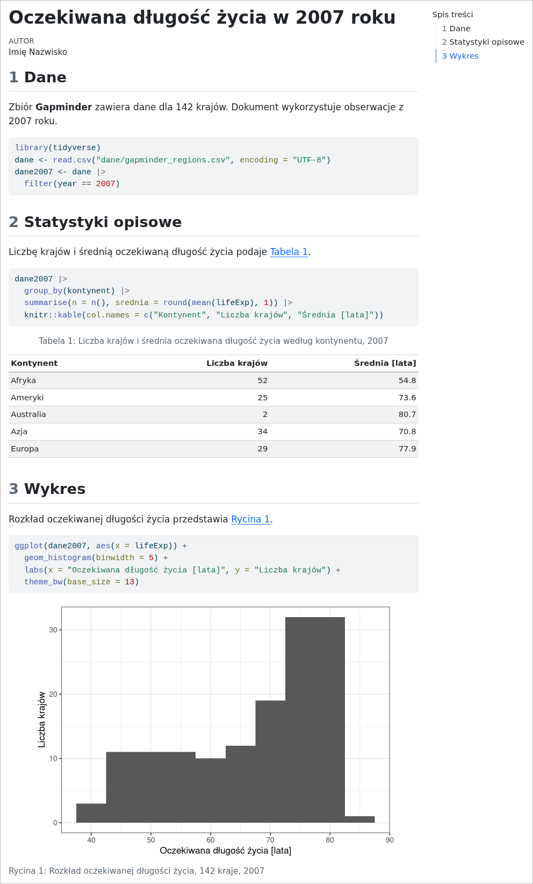
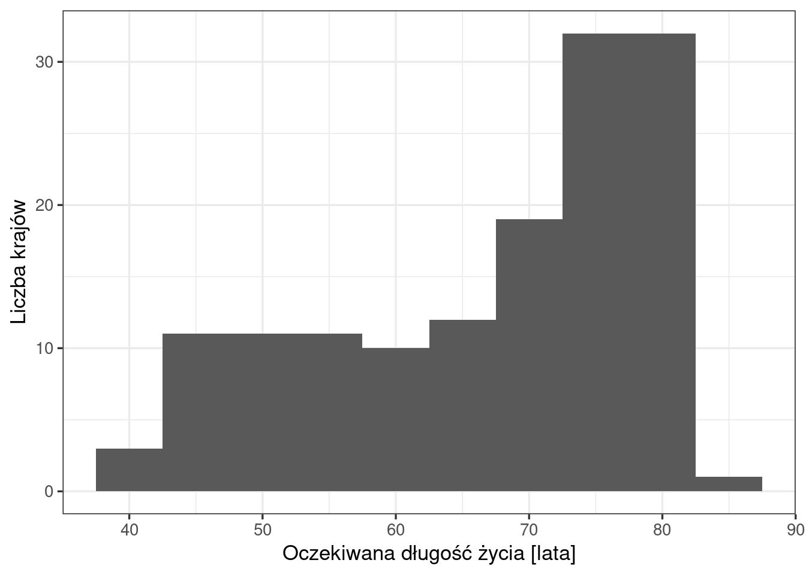

# przygotowanie danych do przykładu
library(tidyverse)
dane <- read.csv("dane/gapminder_regions.csv", encoding = "UTF-8") |>
mutate(across(where(is.character), as.factor))
dane2007 <- dane |>
filter(year == 2007)7 Quarto
Raport zaliczeniowy powstaje jako dokument Quarto: plik .qmd zawierający tekst i kod R, z którego tworzy się dokument HTML. Rozdział opisuje, czym jest Quarto, z jakich części składa się dokument .qmd, jak dodaje się do niego ryciny, tabele i odsyłacze oraz jak tworzy się z niego gotowy dokument. Zasady opracowania treści raportu przedstawia Rozdział 8.
7.1 Czym jest Quarto
Quarto (https://quarto.org) jest otwartym systemem publikacji naukowych i technicznych. Z pliku .qmd tworzy dokumenty w formatach HTML, MS Word i PDF, a także prezentacje, strony internetowe i książki — tym skryptem jest książka utworzona w Quarto. Quarto jest następcą R Markdown, wcześniejszego systemu tego samego typu.
Tworzenie dokumentu z pliku .qmd nazywa się renderowaniem (ang. render) i składa się z dwóch etapów:
- pakiet
knitrwykonuje kolejno wszystkie bloki kodu R i tworzy plik Markdown (.md), który zawiera tekst, kod i wyniki kodu; - program Pandoc zamienia plik Markdown na dokument w wybranym formacie, np. HTML.
Oba etapy wykonuje przycisk Render w RStudio (Sekcja 7.6).
7.2 Odtwarzalność
W dokumencie Quarto wyniki — liczby, tabele i ryciny — powstają podczas renderowania z kodu zapisanego w tym samym pliku. Każdy wynik w raporcie ma więc w dokumencie kod, który go utworzył. Dokument jest odtwarzalny (ang. reproducible): ponowne renderowanie odtwarza wszystkie wyniki, a po zmianie danych — tworzy je od nowa na podstawie nowych danych.
Renderowanie wykonuje cały dokument od początku, w nowej sesji R (Sekcja 2.5). Jest to sesja oddzielna od sesji, z której korzysta konsola RStudio. Dokument musi więc zawierać wszystko, czego potrzebuje kod:
- wczytanie pakietów (
library()) na początku pliku; - wczytanie danych z pliku, ścieżką względną (np.
"dane/gapminder_regions.csv"); - wszystkie kroki przetwarzania danych, w kolejności wykonywania.
Obiekty utworzone wyłącznie w konsoli nie są dostępne podczas renderowania. Dotyczy to także pakietów. Polecenie library() wykonane w konsoli wczytuje pakiet tylko w sesji konsoli, a sesja renderowania rozpoczyna się bez tego pakietu. Dlatego wywołanie library() musi znajdować się w dokumencie, przed pierwszym użyciem funkcji z pakietu. Jeżeli pakiet wczytano wyłącznie w konsoli, blok kodu uruchomiony w RStudio działa, a renderowanie kończy się błędem could not find function "...".
Dokument spełniający te zasady renderuje się tak samo na każdym komputerze, na którym znajduje się ten sam folder z danymi i zainstalowane są potrzebne pakiety.
7.3 Nowy dokument
Nowy dokument tworzy się poleceniem File → New File → Quarto Document… (Rycina 7.1). W oknie New Quarto Document:
- w polu Title wpisuje się tytuł dokumentu, w polu Author — autora;
- format HTML jest zaznaczony domyślnie;
- pole Engine pozostawia się z wartością Knitr — kod R wykonuje pakiet
knitr; - opcja Use visual markdown editor otwiera dokument w trybie Visual (Sekcja 2.5);
- przycisk Create tworzy dokument z przykładową treścią, a Create Empty Document — dokument pusty.
Nowy dokument zapisuje się poleceniem File → Save (Ctrl+S), z rozszerzeniem .qmd, w folderze, w którym znajduje się podfolder dane/.

7.4 Budowa dokumentu
Dokument .qmd składa się z trzech rodzajów elementów: nagłówka YAML, tekstu w składni Markdown i bloków kodu. Poniższy dokument wczytuje dane, a następnie tworzy tabelę i wykres:
---
title: "Oczekiwana długość życia w 2007 roku"
author: "Imię Nazwisko"
lang: pl
crossref:
fig-title: "Rycina"
fig-prefix: "Rycina"
format:
html:
toc: true
number-sections: true
embed-resources: true
---
## Dane
Zbiór **Gapminder** zawiera dane dla 142 krajów. Dokument wykorzystuje obserwacje
z 2007 roku.
```{r}
#| message: false
library(tidyverse)
dane <- read.csv("dane/gapminder_regions.csv", encoding = "UTF-8")
dane2007 <- dane |>
filter(year == 2007)
```
## Statystyki opisowe
Liczbę krajów i średnią oczekiwaną długość życia podaje @tbl-kontynenty.
```{r}
#| label: tbl-kontynenty
#| tbl-cap: "Liczba krajów i średnia oczekiwana długość życia według kontynentu, 2007"
dane2007 |>
group_by(kontynent) |>
summarise(n = n(), srednia = round(mean(lifeExp), 1)) |>
knitr::kable(col.names = c("Kontynent", "Liczba krajów", "Średnia [lata]"))
```
## Wykres
Rozkład oczekiwanej długości życia przedstawia @fig-histogram.
```{r}
#| label: fig-histogram
#| fig-cap: "Rozkład oczekiwanej długości życia, 142 kraje, 2007"
ggplot(dane2007, aes(x = lifeExp)) +
geom_histogram(binwidth = 5) +
labs(x = "Oczekiwana długość życia [lata]", y = "Liczba krajów") +
theme_bw(base_size = 13)
```Wynik renderowania tego pliku przedstawia Rycina 7.2. Kod każdego bloku jest widoczny w dokumencie, a pod nim znajduje się wynik: tabela z numerem i podpisem oraz rycina z numerem i podpisem. Numery sekcji, spis treści po prawej stronie i odsyłacze w tekście tworzy Quarto. Plik z tym przykładem to kod/07_quarto_przyklad.qmd. Kolejne sekcje opisują poszczególne elementy dokumentu, a tworzenie tabeli i ryciny wyjaśnia Sekcja 7.5.

.qmd.
7.4.1 Nagłówek YAML
Nagłówek znajduje się na początku pliku, między dwoma wierszami ---. Zawiera ustawienia całego dokumentu zapisane w składni YAML: nazwa: wartość, z dwukropkiem i spacją. Ustawienia podrzędne zapisuje się w kolejnych wierszach, z wcięciem o dwie spacje — np. toc: true jest ustawieniem formatu html, który jest ustawieniem format.
| Ustawienie | Znaczenie |
|---|---|
title, author, date |
tytuł, autor i data dokumentu |
lang: pl |
język dokumentu: polskie nazwy elementów, np. „Tabela”, „Spis treści” |
crossref: z fig-title: "Rycina" i fig-prefix: "Rycina" |
nazwa „Rycina” w podpisach i odsyłaczach; przy lang: pl bez tego ustawienia Quarto stosuje nazwę „Rysunek” |
format: html |
format dokumentu; inne formaty: docx (MS Word), pdf |
toc: true |
spis treści na podstawie nagłówków |
number-sections: true |
numeracja nagłówków; wymagana przy odsyłaczach do sekcji (Sekcja 7.5) |
embed-resources: true |
dokument HTML w jednym pliku, z rycinami i stylami zapisanymi wewnątrz pliku (Sekcja 7.6) |
execute: z echo: false |
ukrycie kodu we wszystkich blokach dokumentu |
Błąd we wcięciu albo brak spacji po dwukropku powoduje błąd renderowania.
7.4.2 Tekst w składni Markdown
Tekst poza blokami kodu zapisuje się w składni Markdown: znaki formatowania umieszczone w tekście określają wygląd dokumentu.
| Zapis | Wynik |
|---|---|
## Nagłówek, ### Nagłówek |
nagłówek drugiego i trzeciego poziomu |
**tekst** |
pogrubienie |
*tekst* |
kursywa |
- element |
element listy punktowanej |
1. element |
element listy numerowanej |
[opis](https://quarto.org) |
odnośnik opis |
`kod` |
fragment kodu w tekście: kod |
Lista musi być poprzedzona pustym wierszem; bez niego elementy listy łączą się z poprzedzającym tekstem w jeden akapit. Nowy akapit rozpoczyna się po pustym wierszu.
7.4.3 Bloki kodu i opcje bloku
Blok kodu zaczyna się wierszem ```{r}, a kończy wierszem ```. Kod w bloku jest wykonywany podczas renderowania, a jego wynik pojawia się w dokumencie pod kodem.
Wiersze rozpoczynające się od #| na początku bloku to opcje bloku, zapisywane w składni YAML (nazwa: wartość). Opcje używane w skrypcie:
| Opcja | Znaczenie |
|---|---|
label: fig-histogram |
etykieta bloku — unikalna w dokumencie; prefiks fig- albo tbl- umożliwia odsyłacz (Sekcja 7.5) |
echo: false |
kod nie jest pokazywany w dokumencie, wynik — tak (domyślnie: true) |
eval: false |
kod jest pokazywany, ale nie jest wykonywany (domyślnie: true) |
include: false |
kod jest wykonywany, ale ani kod, ani wynik nie pojawiają się w dokumencie |
message: false, warning: false |
komunikaty i ostrzeżenia nie pojawiają się w dokumencie |
fig-cap: "Podpis" |
podpis ryciny |
fig-width: 8, fig-height: 5 |
szerokość i wysokość ryciny w calach |
tbl-cap: "Podpis" |
podpis tabeli |
R.options: i w kolejnym wierszu, z wcięciem, width: 120 |
szerokość wydruku wyników kodu w znakach; szeroka tabela nie jest wtedy dzielona na kilka części |
Przykład bloku z opcjami:
```{r}
#| label: fig-histogram
#| fig-cap: "Rozkład oczekiwanej długości życia, 2007"
#| echo: false
ggplot(dane2007, aes(x = lifeExp)) +
geom_histogram(binwidth = 5)
```Opcje dla wszystkich bloków dokumentu podaje się w nagłówku YAML, w ustawieniu execute, np. execute: i w kolejnym wierszu, z wcięciem, echo: false. Opcja podana w bloku zastępuje ustawienie z nagłówka.
7.5 Ryciny, tabele i odsyłacze
Rycina albo tabela utworzona w bloku kodu otrzymuje numer i podpis, jeżeli blok ma odpowiednie opcje:
- rycina: etykieta z prefiksem
fig-(numer i możliwość odsyłacza) i opcjafig-cap(podpis); - tabela: etykieta z prefiksem
tbl-i opcjatbl-cap; tabelę tworzy funkcjakable()z pakietuknitr.
W tekście do ryciny albo tabeli odwołuje się znakiem @ i etykietą: zapis @fig-histogram zostaje zastąpiony numerem ryciny, np. „Rycina 1”. Quarto numeruje ryciny i tabele automatycznie, w kolejności występowania.
Przykład — dwa poniższe bloki tworzą tabelę i rycinę, do których odwołuje się tekst pod nimi:
# tabela z podpisem: etykieta z prefiksem tbl- i opcja tbl-cap
dane2007 |>
group_by(kontynent) |>
summarise(n = n(), srednia = round(mean(lifeExp), 1)) |>
knitr::kable(col.names = c("Kontynent", "Liczba krajów", "Średnia [lata]"))| Kontynent | Liczba krajów | Średnia [lata] |
|---|---|---|
| Afryka | 52 | 54.8 |
| Ameryki | 25 | 73.6 |
| Australia | 2 | 80.7 |
| Azja | 34 | 70.8 |
| Europa | 29 | 77.9 |
knitr::kable()zamienia tabelę z wynikami na tabelę w dokumencie. Bez tej funkcji wynik pojawia się w dokumencie w postaci wydruku z konsoli.- Zapis
knitr::wskazuje pakiet, z którego pochodzi funkcja, i nie wymaga wczytania pakietu poleceniemlibrary()(Rozdział 6). col.namespodaje nazwy kolumn wyświetlane w tabeli. Argumentdigitsokreśla maksymalną liczbę miejsc po przecinku w kolumnach liczbowych.
# rycina z podpisem: etykieta z prefiksem fig- i opcja fig-cap
ggplot(dane2007, aes(x = lifeExp)) +
geom_histogram(binwidth = 5) +
labs(x = "Oczekiwana długość życia [lata]", y = "Liczba krajów") +
theme_bw(base_size = 13)
Tekst z odsyłaczami zapisany w pliku .qmd:
Liczbę krajów na kontynentach podaje @tbl-q-kontynenty,
a rozkład oczekiwanej długości życia przedstawia @fig-q-histogram.Wynik w dokumencie: Liczbę krajów na kontynentach podaje Tabela 7.1, a rozkład oczekiwanej długości życia przedstawia Rycina 7.3.
Do sekcji odwołuje się w ten sam sposób. Nagłówek sekcji otrzymuje etykietę z prefiksem sec- w nawiasie klamrowym, np. ## Dane {#sec-dane}, a w tekście — zapis @sec-dane. Odsyłacze do sekcji wymagają numeracji nagłówków (number-sections: true w nagłówku YAML).
Zasady zapisu etykiet:
- etykieta jest unikalna w dokumencie;
- etykieta ryciny, tabeli albo sekcji zaczyna się od prefiksu
fig-,tbl-albosec-; - zawiera małe litery, cyfry i myślniki — bez polskich znaków, spacji i podkreśleń.
7.6 Renderowanie
Dokument renderuje się przyciskiem Render nad oknem dokumentu albo skrótem Ctrl+Shift+K (Sekcja 2.5). Render tworzy dokument w pierwszym formacie podanym w nagłówku YAML; jeżeli nagłówek nie podaje formatu, powstaje dokument HTML. Opcja Render on Save na pasku nad dokumentem powoduje renderowanie przy każdym zapisie pliku.
Domyślnie render HTML tworzy obok pliku raport.qmd dwa elementy: plik raport.html i folder raport_files/ z rycinami i plikami stylów. Plik HTML wyświetla się poprawnie tylko razem z tym folderem. Ustawienie embed-resources: true (Sekcja 7.4.1) zapisuje wszystkie te elementy wewnątrz pliku HTML — powstaje jeden plik, który można przesłać albo otworzyć na innym komputerze bez dodatkowych plików.
Inne formaty:
format: docx— dokument MS Word;format: pdf— dokument PDF; wymaga instalacji systemu TeX. Zalecana dystrybucja TinyTeX instaluje się poleceniemquarto install tinytexwpisanym w zakładce Terminal w RStudio.
7.7 Typowe błędy renderowania
Błąd w bloku kodu przerywa renderowanie. Komunikat w zakładce Background Jobs (albo Render) podaje treść błędu, nazwę pliku i numery wierszy bloku, np. Quitting from raport.qmd:13-15.
| Komunikat albo objaw | Przyczyna i postępowanie |
|---|---|
object '...' not found |
obiekt utworzono w konsoli albo w bloku położonym niżej w pliku — kod tworzący obiekt umieszcza się w dokumencie przed miejscem użycia (Sekcja 7.2) |
could not find function "..." |
pakiet wczytano tylko w konsoli — library() umieszcza się na początku dokumentu |
cannot open file '...': No such file or directory |
ścieżka do pliku z danymi nie odpowiada położeniu pliku .qmd — folder dane/ powinien znajdować się obok pliku .qmd |
Duplicate chunk label '...' |
dwa bloki mają tę samą etykietę — etykiety muszą być unikalne |
w tekście ?@fig-... i ostrzeżenie Unable to resolve crossref |
odsyłacz do nieistniejącej etykiety: literówka w etykiecie albo brak prefiksu fig- / tbl- |
| błąd zapisu dokumentu Word | plik .docx z poprzedniego renderowania jest otwarty w programie Word — należy go zamknąć |